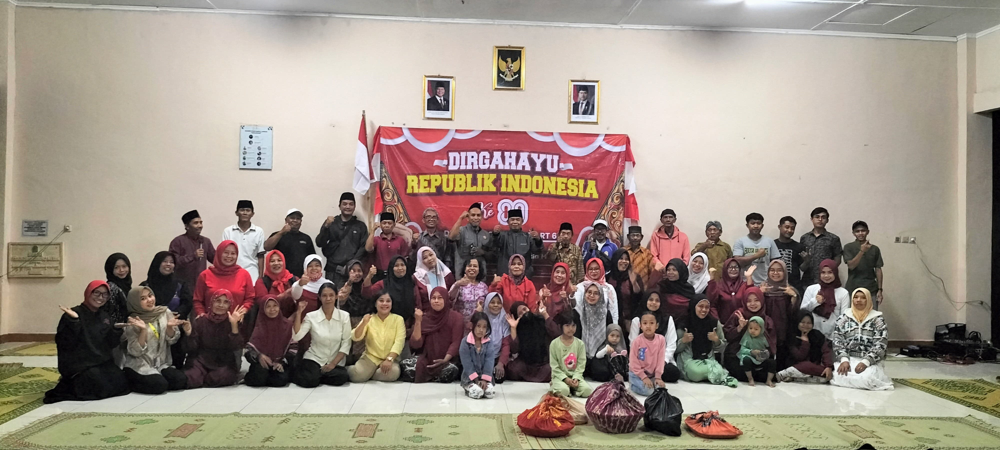
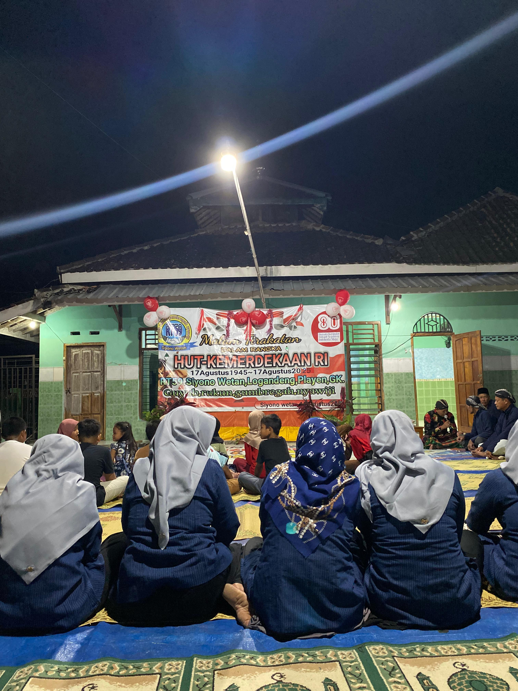

Semarak Kemerdekaan di Siyono Wetan: Lomba Meriah Hingga Malam Tirakatan Penuh Kebersamaan
Gunungkidul – Semarak perayaan Hari Ulang Tahun ke-80 Republik Indonesia terasa hingga pelosok desa. Warga Siyono Wetan, Kecamatan Playen, kompak menggelar berbagai kegiatan mulai dari lomba rakyat yang penuh tawa hingga malam tirakatan yang khidmat. Suasana kebersamaan dan gotong royong begitu kental, mencerminkan semangat kemerdekaan yang diwariskan para pendahulu bangsa.
Bulan Agustus selalu membawa nuansa berbeda di setiap sudut negeri. Tak terkecuali di Siyono Wetan, Playen, Gunungkidul. Semangat merah putih terasa sejak awal bulan, ketika warga bergotong royong memasang bendera, umbul-umbul, dan hiasan bambu yang membentang di sepanjang jalan desa. Suasana menjadi meriah, penuh warna, dan tentu saja dipenuhi keceriaan.
Rangkaian perayaan dimulai dengan lomba-lomba khas 17 Agustus. Anak-anak menjadi peserta paling antusias. Dengan wajah penuh semangat, mereka mengikuti lomba balap karung, makan kerupuk, hingga lomba memasukkan paku ke dalam botol. Gelak tawa pecah setiap kali ada peserta yang terjatuh atau justru terlalu bersemangat hingga membuat suasana semakin riuh. Tidak hanya itu, lomba estafet kelereng dan lomba menggambar bertema kemerdekaan juga menjadi daya tarik tersendiri, memunculkan kreativitas sekaligus kebersamaan.
Para remaja dan ibu-ibu tidak kalah semangat. Mereka berpartisipasi dalam lomba menghias tumpeng, karaoke lagu perjuangan, hingga lomba memasak sederhana yang hasilnya dinikmati bersama. Sementara itu, bapak-bapak ikut menambah semarak dengan lomba tarik tambang dan balap bakiak yang membuat suasana sore semakin pecah oleh sorakan penonton. Di balik semua itu, jelas terlihat bahwa tujuan lomba bukan semata kemenangan, melainkan mempererat hubungan antarwarga.
Selepas siang yang meriah, warga kembali bersiap untuk puncak acara malam 17 Agustus berupa malam tirakatan. Balai dusun menjadi tempat berkumpul. Anak-anak, remaja, hingga lansia datang bersama keluarga, duduk lesehan dengan suasana hangat penuh kekeluargaan. Acara dibuka dengan doa bersama sebagai wujud syukur atas kemerdekaan yang telah diperjuangkan dengan darah dan air mata para pahlawan bangsa.
Dalam momen tirakatan, disampaikan pula renungan singkat mengenai arti kemerdekaan di masa kini. Bahwa mengisi kemerdekaan tidak hanya dengan perayaan, tetapi juga dengan menjaga persatuan, semangat gotong royong, serta mendidik generasi muda agar tidak melupakan sejarah.
Acara semakin berwarna ketika warga menampilkan hiburan sederhana. Ada yang membacakan puisi perjuangan, ada pula yang melantunkan tembang Jawa, dan anak-anak SD dengan penuh semangat menyanyikan lagu-lagu nasional. Setiap penampilan disambut tepuk tangan hangat, menambah kentalnya nuansa kebersamaan malam itu.
Puncak tirakatan ditutup dengan makan bersama. Nasi tumpeng dan aneka jajanan tradisional dibagikan, dimakan secara lesehan, menciptakan suasana akrab tanpa sekat. Tua, muda, laki-laki, maupun perempuan bercampur dalam kebersamaan yang sulit tergantikan.
Perayaan 17 Agustus di Siyono Wetan bukan sekadar pesta tahunan. Ia adalah ruang untuk mengingat jasa para pahlawan, mempererat tali silaturahmi, sekaligus menghidupkan kembali semangat gotong royong yang menjadi napas bangsa ini. Di balik tawa, lomba, dan tirakatan, tersimpan harapan besar: agar semangat kemerdekaan tetap menyala di hati setiap warga, dari generasi ke generasi.